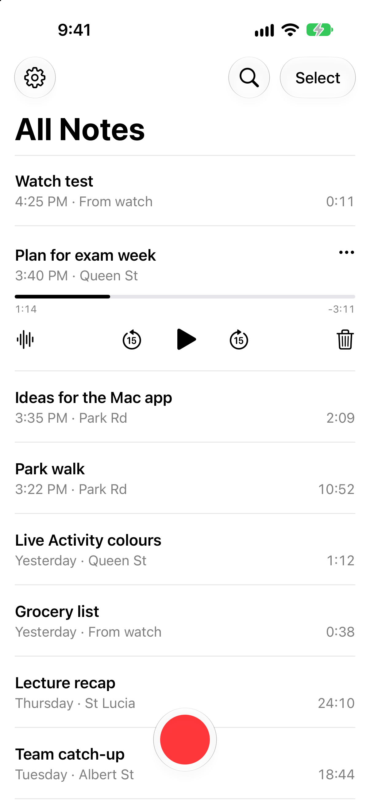
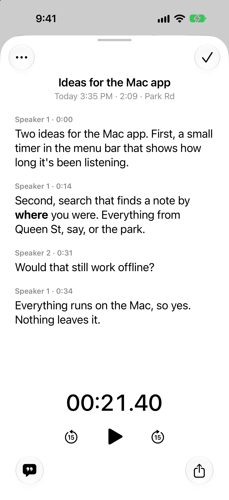

Sona
The notetaker that runs on your own devices.
Tap to record on your iPhone or Apple Watch, and it's written down on the phone itself. 100% free and 100% open source. Nothing you record leaves your devices: no account, no server, no tracking.
On the App Store as Sona Notes, for iPhone and Apple Watch.

One tap on your wrist.
Put Sona on your watch face. One tap starts a recording, and the complication counts the time while it runs. Tap again to stop. Your iPhone writes the note and marks it as from your watch.
Away from your iPhone? The watch keeps the recording and sends it when the phone is back in range.

Transcribed on your iPhone. Never on a server.
Sona turns your recording into text on the phone, with who said what. It adds a title and where you were, then puts the note in Sona's folder in your iCloud Drive. Or it keeps it on the phone, if you'd rather.
- Who said what
- Voices are told apart on the phone. No voiceprints are kept.
- Where you were
- A street name on each note, if you allow location.
- Plain files
- Each note is a text file you can open anywhere, with its audio beside it.
- Audio
- Kept for 30 days, forever, or not at all. You choose.
On your Mac, all day.
And for your AI.
Sona for Mac is free and open source, for Apple silicon Macs with macOS 14 or later. Until there's a signed download, you build it from the source.
Always on. If you want, it listens all day and turns each conversation into a note, with who said what. Pause it from the menu bar for an hour or until tomorrow.
Hold to dictate. Hold fn in any app, talk and let go. Your words are pasted where you're typing.
For your AI. Turn on AI access, and apps like Claude, Cursor and Codex can read your notes over MCP. Turn it off, and they get nothing.
Your iPhone's notes too. Notes from your iPhone and Apple Watch come over through iCloud Drive and sit with the rest.
Private by design.
Sona has no server and no account. Your recordings, notes, titles and places are never sent to us.
- Tracking
- None. No analytics, ads or crash reporting.
- The internet
- Used for two things: the speech model, downloaded once, and street names from Apple's map service if you allow location. Apple gets the coordinates and nothing else.
- Your notes
- On your device, in your own iCloud Drive, or in a folder you pick.
- This site
- No cookies, scripts or trackers.
Open source.
Every line of Sona is on GitHub, under the MIT licence. Read it, build it yourself, or check that it does what this page says.
It's built on open models: NVIDIA's Parakeet for the words, and pyannote for telling voices apart.